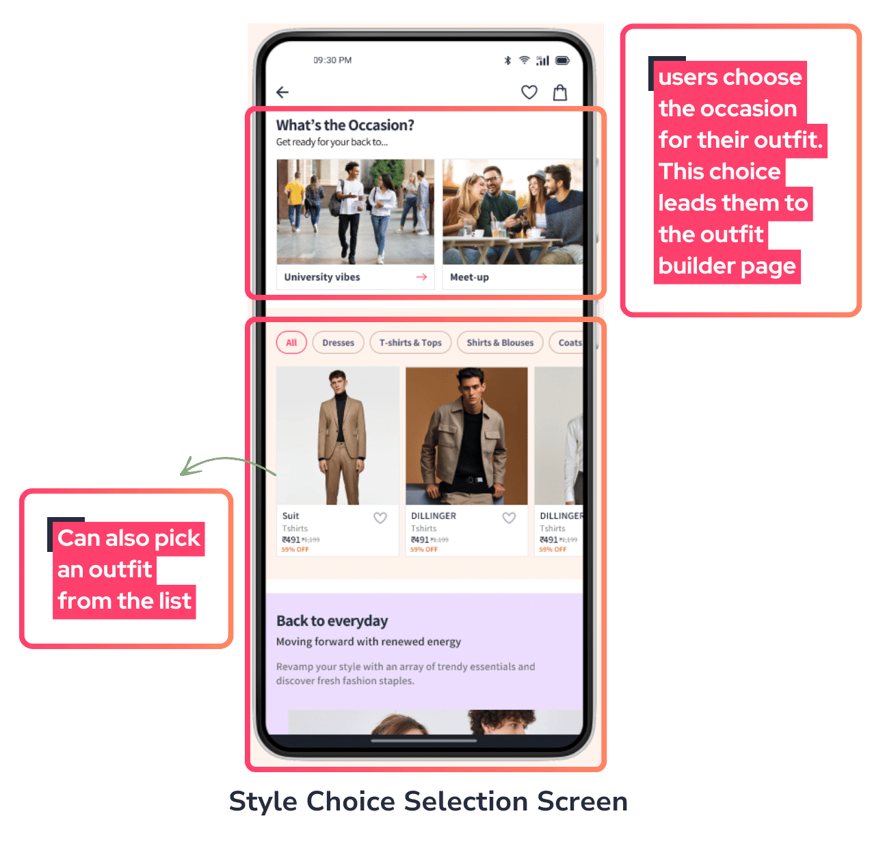
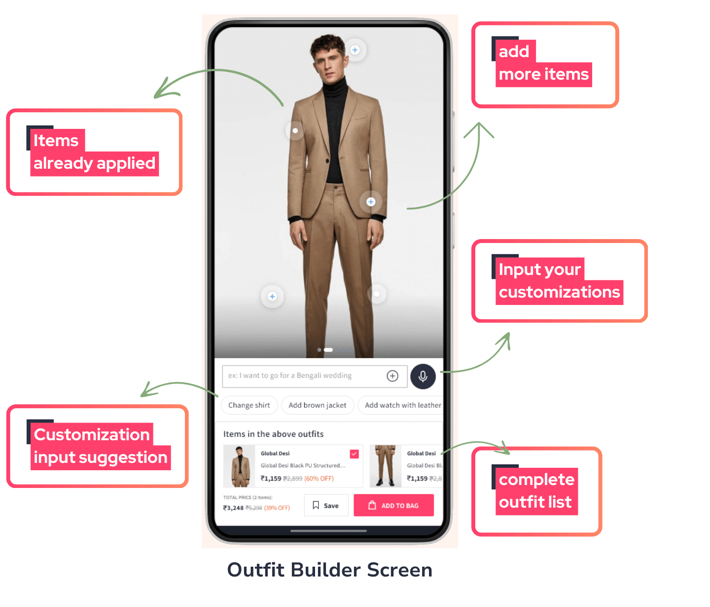
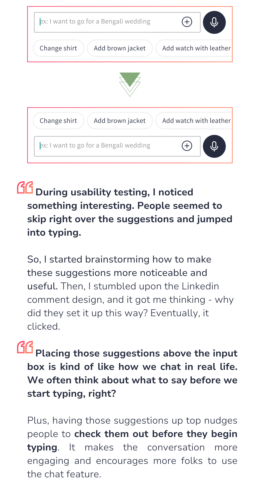
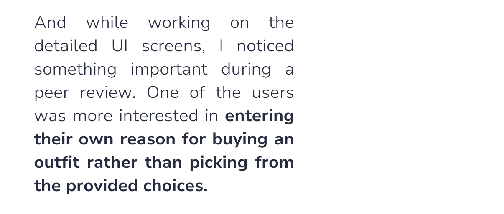
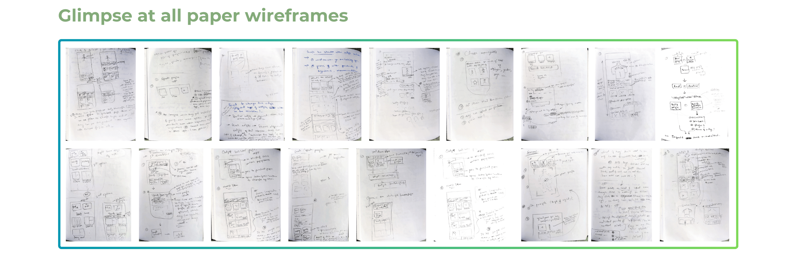
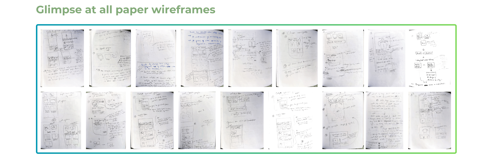
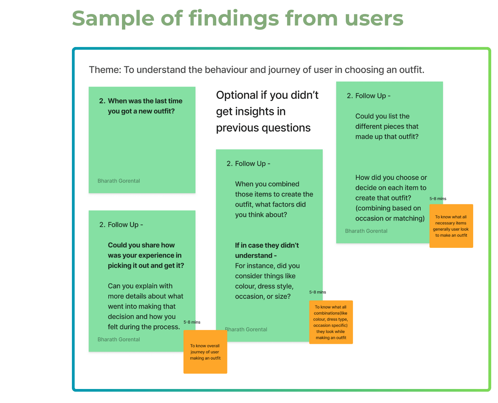
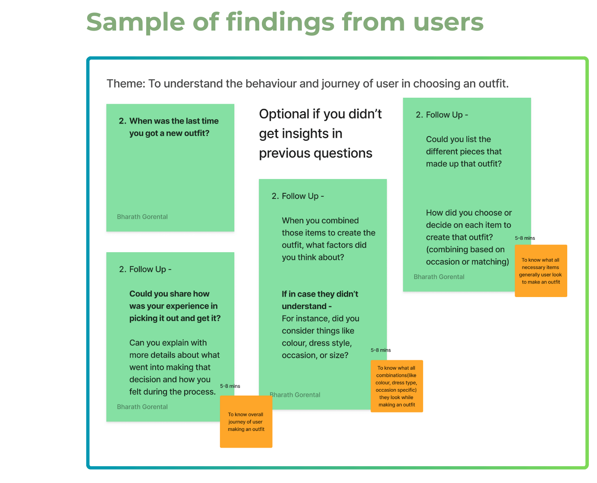

Let's Explore the Challenges and How I Tackled Them in Designing
Outfit Builder user flows
I'll use the 'Outfit Building Screen' as an example to demonstrate the
transformation. But first, let's take a closer look at this screen.


Let's Explore the Transformation

To improve the user experience, making it more practical,
user-controlled, and efficient, I decided to make changes to this
part of the feature.

This made me rethink the user experience, especially because we were
already having some concerns about using text prompts in the outfit
builder. It was time to find a solution that could make both types
of users happy – those who liked the predefined reasons and those
who wanted to customize.
Alright, so let's dive into how I designed the interface to
accommodate these three different ways of providing prompts.
After shifting the 'prompt input' to the Style Choice Selection
Screen, However, this transition wasn't without its challenges due
to the limitations I mentioned earlier. In my quest for a more
user-friendly, practical, and efficient customisation solution, I
explored various ideas and ultimately settled on one
solution
In the final version, the linear steps for practical customization
remained, but a powerful addition was filters.
Users could now have
more control in finding specific items and adjusting their
outfit.
Filters provided a convenient way to fine-tune their choices, making
the outfit-building experience even
more user-friendly.
How My Approach Influenced Consistent Design Assets?
When adding VirtuFit to the Myntra app, I aimed for a seamless fit with
their existing design. So, I recreated some of Myntra's components to
maintain a consistent look and feel. Yet, because My feature needed some
fresh elements, I designed new components inspired by Myntra's style.
What's more, I crafted additional components after learning from user
interactions and trying different ideas. Now, let's dive into this design
journey together.


 So that users don't have to build an outfit from scratch every
time.
So that users don't have to build an outfit from scratch every
time.


 



 
